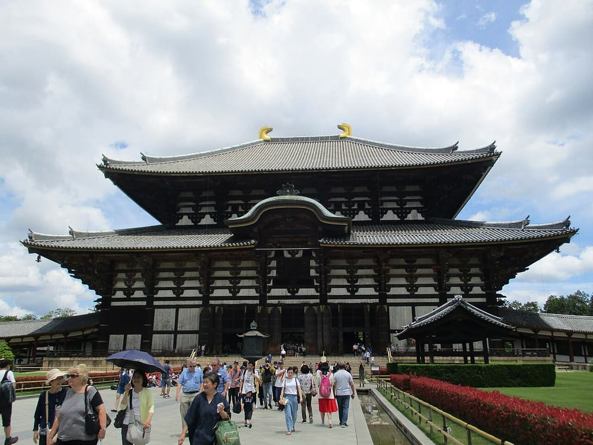
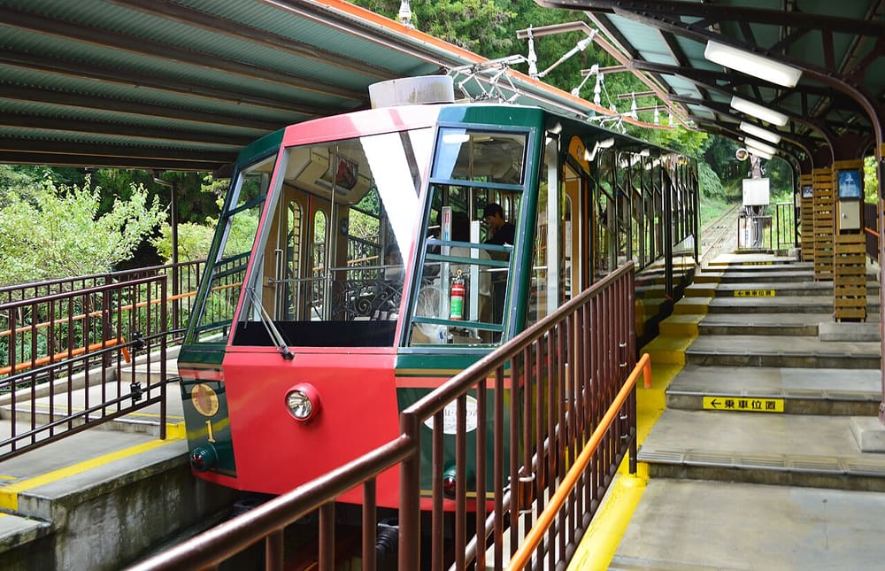

Toshinori baba · CC BY-SA 4.0 2027/04/08（四） 嵐山・嵯峨野 嵯峨野小火車天龍寺野宮神社常寂光寺二尊院渡月橋 從龜岡搭小火車逆著保津川進入嵐山，沿小倉山麓走過五處寺社，最後在渡月橋收尾。 📖 手冊 🗺️ 總覽 📄 PDF
Luka Peternel · CC BY-SA 4.0 2027/04/08（四） 伏見稲荷・宇治 千本鳥居平等院宇治橋宇治上神社宇治神社 清早走千本鳥居到四ツ辻，參道逛街後沿 JR 奈良線南下宇治，走平等院與宇治川兩岸的神社，全程不用轉乘。 📖 手冊 🗺️ 總覽 📄 PDF
 Cun Cun · CC BY-SA 4.0 2027/04/08（四） 奈良 東大寺二月堂春日大社興福寺東向商店街 從奈良公園走進東大寺，經二月堂、法華堂上春日大社，下山走興福寺與東向商店街，傍晚搭近鉄回京都。 📖 手冊 🗺️ 總覽 📄 PDF
 Saigen Jiro · CC0 2027/04/08（四） 比叡山・大津 日吉大社坂本纜車延暦寺東塔三井寺大津港 走坂本老街到日吉大社，坐日本最長的坂本纜車上延暦寺，中午下山吃蕎麥麵，下午三井寺，最後在大津港散步。 📖 手冊 🗺️ 總覽 📄 PDF